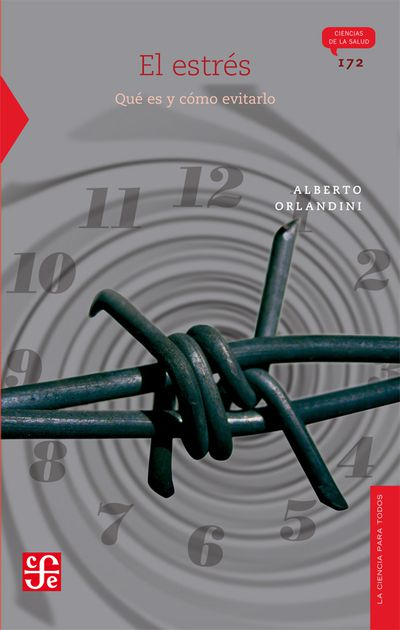

Alicia Cortés Gamboa
Estudiante / Técnico en Programación
Lerma, Estado de México, México
Acerca de
Estudiante enfocado en tecnicas de programación con experiencia en la Coordinación, Administración, Diseño y Manejo de lenguaje de programación Java y Python, asi como el desarrollo de páginas web con el uso de HTML, css y js. Experiencia en la realización de proyectos con la finalidad de realizar una solución con respecto a estas. Habilidad en lo administrativo, diseño, creatividad, estrategico, logica, representación y liderazgo.
Actividad
|
|  |
El estrés: qué es y cómo evitarlo.
Serie: la ciencia para todos
Autor: Alberto Orlandini
Editorial: fondo de cultura económica
Recomendado por Alicia Cortés Gamboa
|
 |
AFICIONES E INTERESES:
• Viajar
• Escuchar Música
• Practicar algun deporte
• Bailar
• Jugar Videojuegos
|
 |
Expo Bátiz
Mayo 2020
|
Experiencias
Experiencia en el area de Administración y Tesoreria
Agosto de 2015 – Julio de 2018 | 2 años y 7 meses
Ciudad de México
• Administración general de recursos y gastos
Jefa de grupo
Agosto de 2015 - Julio 2019 | 4 años y 7 meses
Ciudad de México
• Encargada de los trabajos, proyectos y la comunicación entre mi grupo y autoridades
Subjefa de la Comunidad de Alumnos
Ciudad de México
Agosto de 2017 - Julio 2018 | 7 meses
• Propuestas de mejora en la comunidad
• Encargada de dirigir los proyectos
• Participación en eventos de la escuela
• Representante de la escuela
• Vinculo de comunicación de los alumnos y autoridades
Competencias Deportivas
Ciudad de México y alrededores
2012 - Septiembre 2017 | 5 años
• Gimnasia Ritmica
• Ballet Clásico
• Atletismo
Corte y Confección
Ciudad de México
Agosto 2015 - Julio 2018 | 3 años
• Manejo de herramientas dentro de esta area
• Confeccionamiento de prendas
• Puntadas manuales y con el uso de máquina de coser
• Conocimiento en el area de la moda
• Diseño de prendas
• Conocimiento de combinaciones y reglas de vestir
• Modelaje
Educación
Preescolar privada Instituto Edimburgo
2005 - 2009
Escuela primaria Estado de Nuevo León
2009 - 2015
 Instituto Politécnico Nacional
Instituto Politécnico Nacional
Centro de Estudios Científicos y Tecnológicos No. 9 "Juan de Dios Bátiz"
2018 - Actualidad
Técnico en Programación
Idiomas
Español
Competencia Nativa
Inglés
Competencia Intermedia